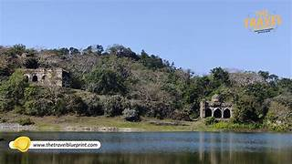
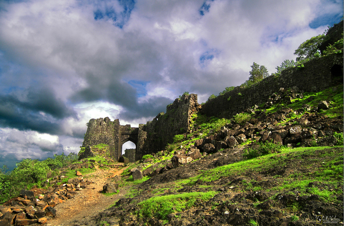

Gawilgarh Fort

•Gawilghur
(also, Gawilgarh or Gawilgad, Pronunciation: [ɡaːʋilɡəɖ]) was a well-fortified mountain stronghold of the Maratha Empire north of the Deccan Plateau, in the vicinity of Satpura Ranges, Amravati District,[1] Maharashtra. It was successfully assaulted by a force commanded by Arthur Wellesley on 15 December 1803 during the Second Anglo-Maratha War.
•History

•The fort takes its name from the Gawli (cow herds) who inhabited the Berar (modern day Amravati) for centuries. Earlier the fort was likely just made of mud as were several such areas in the region. The exact date of construction is not known but the Persian historian, Firishta, records that Ahmed Shah Wali, the ninth king of the Bahamani dynasty reconstructed Gawilgarh when he was encamped at Ellichpur in 1425.[2] Likely this was the date when major fortification was carried out.
In 1803 during the 2nd Maratha War the fort was besieged by Arthur Wellesley (later Duke of Wellington).[3] After two failed attempts at the main gate by British and Sepoy companies, and many casualties, Captain Campbell led the 94th Highlanders (light company) up the ravine dividing the inner and outer forts and into the inner fort by escalade. The Scots then forced the northern gatehouse and opened the many gates, allowing the remaining British forces entry. The British suffered few casualties in the final assault (approx. 150). The fortress was returned to the Killedar Rana Shivsingh Rajput of the Maratha Empire, after making peace with the British but they abandoned it.
Location